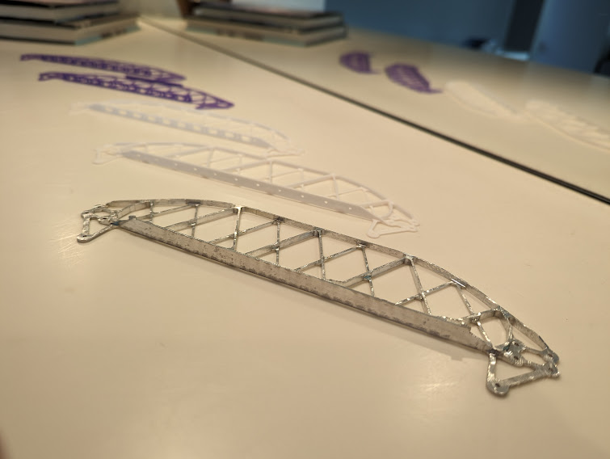
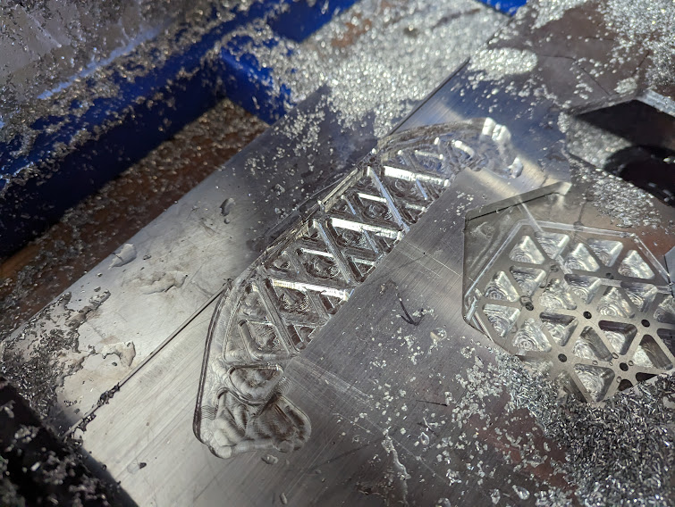
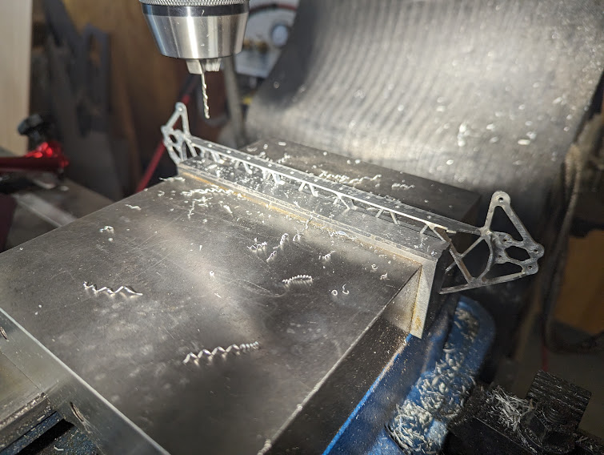
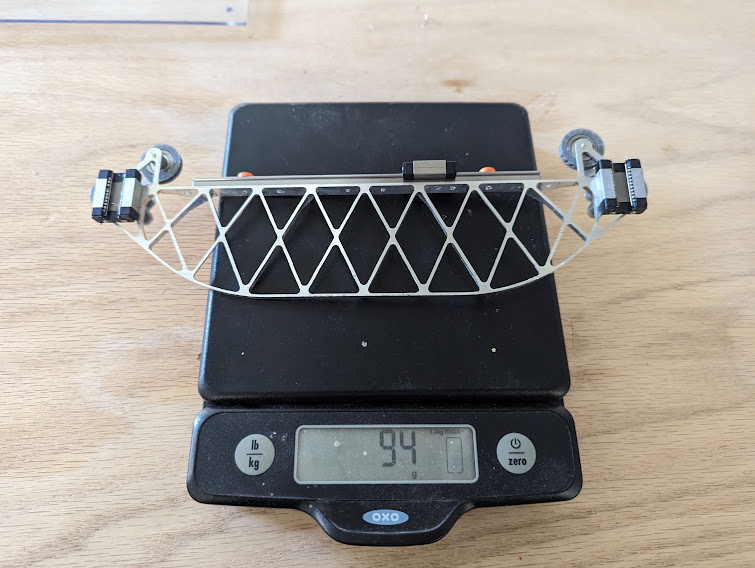
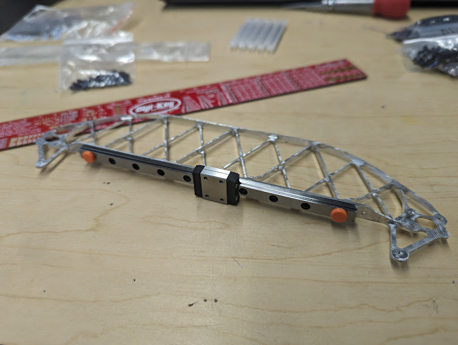
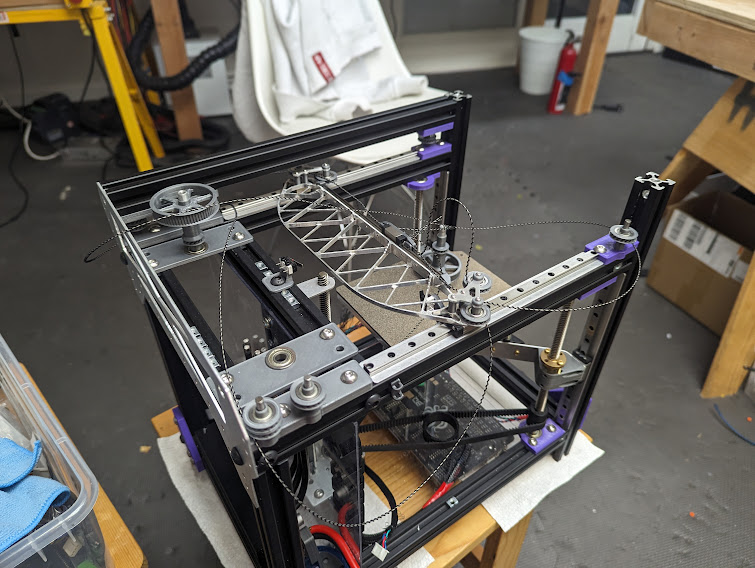

01 — Problem
What actually limits print speed?
3D print speed is limited by two things: how fast plastic can be melted, and how fast the toolhead can accelerate without the frame resonating. Most printers compromise heavily on the second — stiff frames are heavy, heavy toolheads need slow acceleration.
CoreXY offers a structural advantage: both motors are stationary, so the moving mass is only the toolhead and gantry. High acceleration is theoretically achievable — if the machine is designed with that goal from the start.
"Most printer frames are designed to be 'good enough.' A speed-optimized design means every gram and every stiffness path is intentional."
02 — Process
Designing around dynamics, not aesthetics
Each assembly decision was preceded by a question: what load path does this carry, and what's the minimum material to carry it reliably?
Key decisions: aluminum extrusion in tension/compression orientations only (never bending), extruder motor relocated to frame to minimize toolhead mass, a gantry designed for maximum second moment of area per gram, and intentional vibration isolation between bed and frame.
The CAD also included a detailed BOM with mass accounting — every part was weighed on paper before modeled in full detail.
The gantry: printed prototypes → machined aluminum
The X gantry carries the highest dynamic loads and dominates moving mass, so it got the full treatment: a triangulated truss profile iterated through 3D-printed prototypes, then CNC-machined from aluminum plate.



03 — Solution
94 grams, rail and carriages included
The finished gantry — aluminum truss, MGN linear rail, and both carriages — weighs in at 94 g. Every gram removed from the gantry raises the achievable acceleration for a given motor and belt tension, or reduces the frame excitation at the same speed.


Frame integration

04 — Result
A template for dynamics-first mechanical design
Starting from load paths, mass targets, and dynamic requirements before modeling anything is directly applicable to any high-performance mechanical system. This approach informed mechanism design at Brewbird, where every gram added to a moving assembly has a cost in motor sizing.
05 — Key Learning
Start from load paths, not geometry
The most valuable habit this project reinforced is asking "what load does this carry?" before deciding anything about geometry or material. Every gram on the moving gantry has a cost in motor torque and settling time — making that cost explicit from the start changes which design decisions feel obvious.
A mass-accounting BOM alongside the CAD model is a simple practice with outsized impact: it forces every component to justify its weight, and makes tradeoffs between stiffness and inertia concrete rather than intuitive. Cheap printed prototypes of a machined part are the same idea applied to manufacturing — three plastic trusses cost an evening and caught fit issues that would have scrapped aluminum.